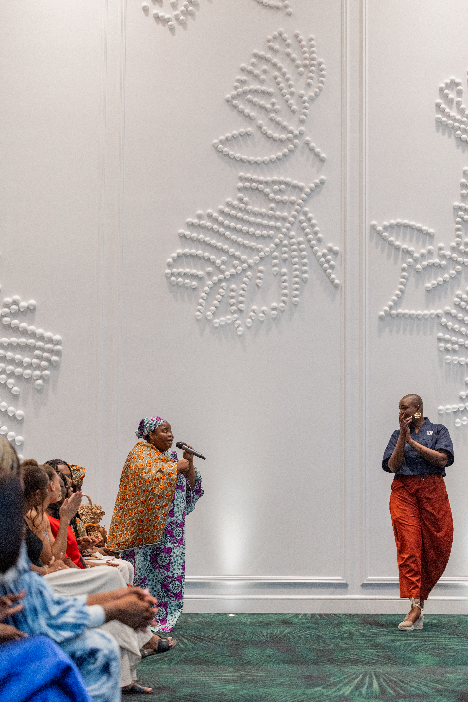

Table ronde Les Patronnes
Sofitel Cotonou Marina
9 juillet 2026 · CotonouUne parole en commun
Créer les conditions de l’écoute

Au Sofitel Cotonou Marina, Les Patronnes ouvre un espace de conversation où se rencontrent entrepreneuses, créatrices, cheffes et femmes de marché. Une parole exigeante, nourrie par les expériences de celles qui agissent.
La table ronde fait de l’hospitalité une architecture du soin : un temps pour partager les récits, faire circuler les idées et imaginer des alliances durables.